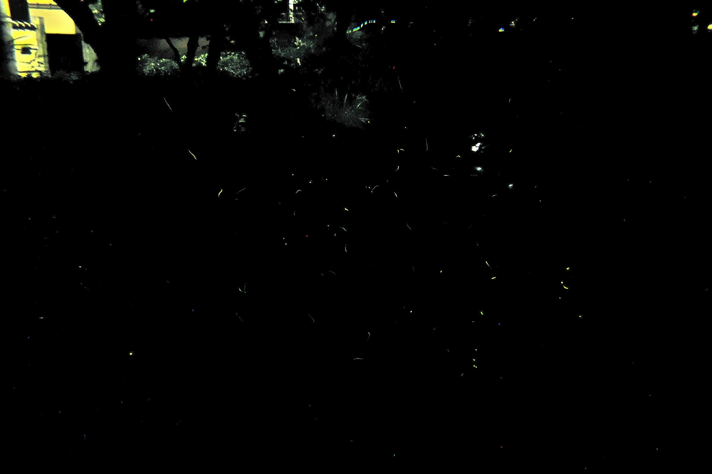

| ・蛍と多重露光 (H24.06.14) | ||
大学から少し南に下ると松ヶ崎疎水（松ヶ崎浄水場から京都府立植物園まで）があり、この季節の疎水には蛍が飛んでいます。下の写真は疎水にかかる橋から蛍が飛んでいる様子を眺めています。写真ではにぎやかに飛んでいるように見えますが、実際は数匹が飛んでいるくらいです。計測研なので、画像処理の1つである多重露光を使ってにぎやかにしてみました。まずは、カップルや家族連れの中を黙々と15秒間シャッターを開放にして、30枚のカラー画像（2640 pixel×1760 pixel）を撮影します。これら全ての画像から、各ピクセル毎にRGB値それぞれの最大値を抽出するプログラムを書いて実行すれば完成です。計測研にいると、ササッとこんなプログラムは書けるようになります。 |
||
|

今年の蛍は刺すから気をつけた方が良い。（助教談） |
||